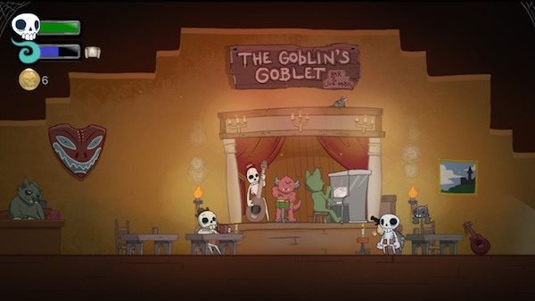
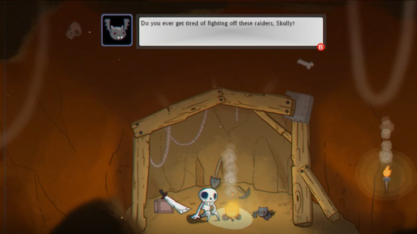
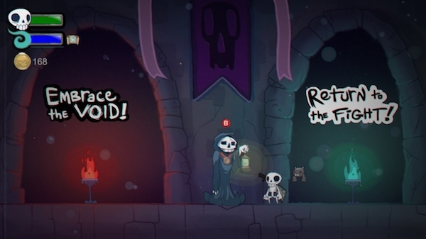
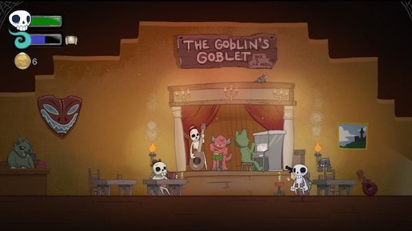
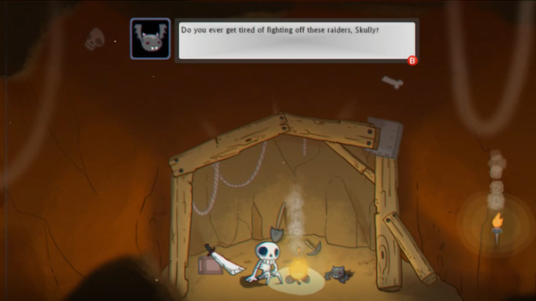
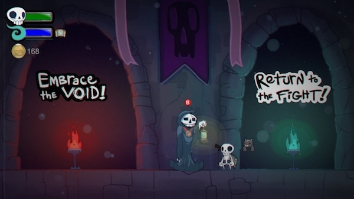

Skelattack
In Development
Genre: Dungeon Crawler
Created by: Ukuza
Role: Programmer/Designer
Engine: GameMaker Studio 2
Team Size: 5
Game Description
You are Skully, an enchanted skeleton, living in the deepest part of the dungeon. You awaken to the terrible sound of the Alarm Bell, letting you know that intruders have been seen within the dungeon. Joined by Your helpful bat companion Imber and armed with magic, you exit into the Sewers of the dungeon sword in hand to begin your hunt. Why are they here? No intruders can be left alive to tell of this place.
My Experience
I programmed and designed on Skelattack for Ukuza. I joined the team in May after meeting with them at PAX East. I was able to apply a lot of my knowledge over the years of working on GameMaker: Studio 1.4 for only personal projects on to a commercial product. Since then I've worked heavily with boss development, environment hazards, implementation of new features, and QA of all parts of the game. I designed and programmed two bosses from the ground up and modified them based on the team's feedback.
 




